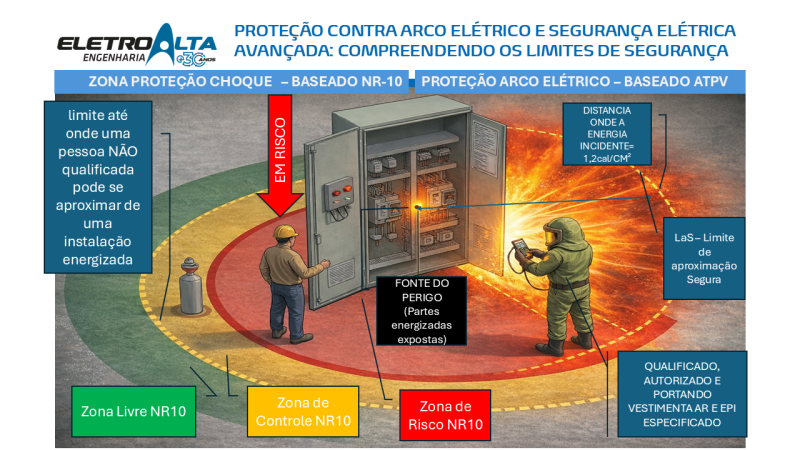
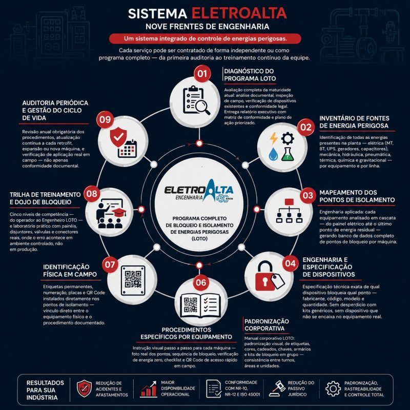

Nova NR-10 2026 (Portaria MTE nº 737/2026): Análise Técnica Comparativa, Impactos para a Engenharia Elétrica Industrial e Prazo de Adequação
Por Eng. Glauber Maurin — Engenheiro Eletricista, Diretor da EletroAlta Engenharia
Especialista em gestão de riscos elétricos industriais, NR-10,
arco elétrico (NBR 17227 / IEEE 1584:2018), SPDA e áreas classificadas
Atualizado em 1º de junho de 2026
Resumo executivo
Nova NR-10 2026 – a Portaria MTE nº 737/2026 aprovou a nova redação da NR-10 e entra em vigor em 1º de junho de 2027. A mudança central: o risco elétrico deixa de ser gerido de forma isolada e passa a integrar formalmente o GRO da NR-01 (item 10.1.1). Entre as principais mudanças destacam-se:
- Arco elétrico torna-se risco primário, com critérios de EPI vinculados ao Anexo IV e, quando este não atender, a estudo de energia incidente (Nova NR-10 2026: itens 10.3.1, 10.4.12, 10.6.5, 10.11.2);
- PIE passa a exigir consolidação formal apenas para organizações no SEP ou em média/alta tensão (item 10.15.6) — mas os requisitos documentais de base continuam valendo para toda organização (itens 10.15.3 e 10.15.4);
- Permissão de Trabalho e inspeções periódicas ganham exigências estruturais explícitas, com plano de ação e cronograma (Nova NR-10 2026: itens 10.7.2 e 10.7.11);
- Situações de Grave e Iminente Risco podem gerar embargo ou interdição imediata, sem o rito da NR-3 (Nova NR-10 2026: item 10.16.1).
Na prática, a conformidade deixa de ser documental e passa a ser probatória: a organização precisa demonstrar, tecnicamente, que conhece e controla seus riscos elétricos.
Introdução
A publicação da Portaria MTE nº 737/2026 da Nova NR-10 2026 representa a mais profunda revisão da NR-10 desde a reforma estrutural realizada em 2004.
Grande parte das análises divulgadas até o momento concentrou-se em treinamentos, capacitações e alterações administrativas.
Entretanto, a leitura integral da nova redação demonstra que as mudanças mais relevantes ocorreram em outro nível: na responsabilização técnica das organizações e na exigência de controle efetivo dos riscos elétricos.
A Nova NR-10 2026 deixa de focar exclusivamente em conformidade documental e passa a exigir demonstrações técnicas de que os riscos foram efetivamente identificados, avaliados e controlados.
Essa mudança impacta diretamente:
| Área | Principal impacto |
|---|---|
| Engenharia | Projetos passam a demonstrar controle de risco |
| Manutenção | PT e inspeções estruturadas |
| SST | Integração ao GRO |
| Diretoria | Responsabilidade ampliada |
| Compras | Critério técnico para EPC/EPI |
Nesta página:
- Integração com o GRO da NR-01
- Arco elétrico como requisito estruturante
- Projeto elétrico e mitigação de risco
- PIE: memória operacional e o novo critério SEP/MT/AT
- Permissão de Trabalho
- Condições impeditivas
- Inspeções elétricas e plano de ação
- Capacitação e responsabilidade do PLH
- EPI contra arco elétrico
- O novo modelo de responsabilidade
- Janela de adequação: o que fazer em 12 meses
- FAQ
| Dimensão | NR-10 / 2004 | NR-10 / 2026 |
| Gestão de risco | Sistema isolado | Integrada ao GRO/NR-01 (item 10.1.1) |
| Arco elétrico | Referência implícita | Requisito estruturante (itens 10.3.1, 10.4.12, 10.6.5) |
| Estudo de energia incidente | Ausente | Obrigatória quando aplicável |
| Projeto elétrico | Foco funcional | Demonstração de controle de risco |
| PIE | Repositório documental | Memória operacional ativa |
| Permissão de Trabalho | Menor protagonismo | Instrumento formal de controle (10.7.2) |
| Inspeções | Recomendação implícita | Exigência explícita com plano de ação (10.7.11) |
| EPI contra arco | Critério subjetivo | Critério por engenharia da instalação |
| Responsabilidade técnica | Limitada ao acidente | Ampliada para todo o ciclo de gestão |
| Capacitação | Conceito aberto | Plano com carga horária, prática supervisionada e rastreabilidade |
Em uma leitura de 30 segundos
| Pergunta | Resposta |
|---|---|
| O que mudou? | Integração ao GRO, reforço da gestão de riscos e ampliação das exigências técnicas. |
| Quando entra em vigor? | 1º de junho de 2027. |
| Quem precisa adequar? | Organizações com trabalhadores expostos aos riscos da eletricidade, conforme o campo de aplicação da NR-10. |
| Qual a prioridade? | Diagnóstico técnico, integração ao PGR/GRO e atualização dos estudos elétricos. |
| O PIE continua existindo? | Sim. A obrigatoriedade da consolidação formal foi redefinida para SEP e instalações de média e alta tensão, mas as obrigações documentais permanecem para as demais organizações. |
Baixe o nosso Guia de aplicação da nova NR10 2026 em nossa pagina.
1. Integração obrigatória com o GRO da NR-01 (item 10.1.1)
NR-10 de 2004
A NR-10 tratava medidas de controle e sistemas preventivos de forma independente. Não existia integração explícita com o Gerenciamento de Riscos Ocupacionais. A gestão elétrica era, em grande parte, um domínio técnico autônomo dentro das organizações.
NR-10 de 2026
O item 10.1.1 da Portaria MTE nº 737/2026 determina expressamente que o controle dos riscos ocupacionais deve observar o Gerenciamento de Riscos Ocupacionais (GRO) previsto na NR-01. Os riscos elétricos passam a integrar formalmente o Programa de Gerenciamento de Riscos (PGR) da organização, com inventário, avaliação, hierarquia de controles e rastreabilidade documentada.
O que muda tecnicamente
A gestão elétrica deixa de ser um sistema isolado.
Agora deve existir integração formal entre:
- inventário de riscos;
- PGR;
- análise de risco;
- medidas de controle;
- gestão elétrica.
Consequência jurídica
Em auditorias, fiscalizações e acidentes, a ausência de integração entre NR-10 e GRO poderá caracterizar falha sistêmica de gestão.
Impacto industrial
Empresas que mantinham apenas documentação elétrica passarão a necessitar de rastreabilidade formal da gestão do risco elétrico.
2. Arco elétrico torna-se requisito normativo estruturante
NR-10 de 2004
O arco elétrico aparecia apenas de forma indireta e periférica na NR-10 de 2004. Não existia obrigação explícita de avaliação formal do risco, nem vínculo normativo entre a seleção de EPI e o cenário de energia incidente da instalação.
NR-10 de 2026
A Portaria MTE nº 737/2026 posiciona o arco elétrico como risco primário da gestão elétrica, com obrigações explícitas em múltiplos itens:
- Item 10.11.2 — a seleção deve seguir os Quadros do Anexo IV e somente quando o Anexo IV não atender deve ser realizado estudo de energia incidente.
- O item 10.3.1 determina que a avaliação de riscos considere:
- Além da identificação dos perigos relacionados ao choque elétrico e ao arco elétrico, o item 10.3.1 determina que a organização considere os métodos e processos de trabalho, a entrada em operação ou modificação de instalações e equipamentos elétricos e a necessidade das medidas de prevenção e controle compatíveis com esses riscos.
- Item 10.4.12 — estudo de energia incidente é exigido quando aplicável à instalação para à definição das medidas de proteção contra os efeitos térmicos do arco elétrico;
- Item 10.6.5 — medidas de proteção coletiva devem contemplar especificamente o cenário de arco elétrico;
Além disso:
- 10.4.12 exige estudo de energia incidente quando aplicável.
- 10.6.5 exige medidas de proteção coletiva contra arco elétrico.
O que muda tecnicamente
Passam a ser tecnicamente exigíveis para instalações de média e alta complexidade: estudo de energia incidente conforme NBR 17227 e metodologia IEEE 1584:2018; cálculo de corrente de curto-circuito; análise de coordenação e seletividade de proteções; parametrização dos relés e disjuntores para minimização do tempo de eliminação de faltas.
Passam a ganhar relevância obrigatória:
- estudos de energia incidente;
- curto-circuito;
- coordenação e seletividade;
- parametrização de proteção;
- tempo de eliminação de faltas.

Consequência jurídica
Após a vigência da Nova NR-10 2026 será muito mais difícil justificar tecnicamente:
- ausência de estudo de energia incidente;
- EPI sem critério técnico;
- desconhecimento do risco de arco elétrico.
Impacto industrial
A energia incidente passa a influenciar diretamente:
- manutenção;
- operação;
- projeto;
- contratação de terceiros;
- gestão de EPC e EPI.
A simples entrega do EPI com ATPV arbitrário deixa de ser suficiente. A seleção correta passa a depender da engenharia real da instalação.
3. Projeto elétrico passa a assumir papel de mitigação de risco (itens 10.4.1 a 10.4.12)
NR-10 de 2004
O projeto elétrico possuía foco predominante em segurança funcional — ou seja, em garantir que a instalação funcionasse corretamente. A responsabilidade do projetista era delimitada principalmente pelo escopo de execução.
NR-10 de 2026
Os itens 10.4.1 a 10.4.12 da Portaria MTE nº 737/2026 ampliam substancialmente as responsabilidades do projeto.
A Nova NR-10 2026 exige que o projeto demonstre como os riscos serão controlados — não apenas como a instalação irá funcionar.
Passam a ser exigidos na concepção:
- impedimento de reenergização;
- aterramento temporário de trabalho;
- espaços seguros para intervenção;
- intertravamentos elétricos e mecânicos;
- identificação e sinalização de risco;
- critérios de energia incidente por painel e circuito;
- estudo de energia incidente quando aplicável;
- documentação de áreas classificadas.
O que muda tecnicamente
O projeto passa a precisar demonstrar como os riscos serão controlados.
Não apenas como a instalação irá funcionar.
Consequência jurídica
Acidentes em instalações projetadas sem esses critérios gerarão questionamentos diretos sobre concepção, premissas de projeto e estudos elétricos utilizados. Projetos genéricos, sem análise de risco incorporada, tornam-se tecnicamente mais frágeis diante de perícias e auditorias. A responsabilidade do projetista e do responsável técnico com ART emitida aumenta significativamente.
A responsabilidade do projetista aumenta significativamente.
Acidentes poderão gerar questionamentos diretos sobre:
- concepção;
- premissas;
- estudos utilizados;
- proteção adotada.
Impacto industrial
Projetos genéricos tornam-se tecnicamente mais frágeis.
4. O PIE deixa de ser arquivo documental — Passa a Ser Memória Operacional – Nova NR-10 2026
NR-10 de 2004
Grande parte das empresas interpretava o PIE como repositório documental. Grande parte das organizações interpretava o Prontuário das Instalações Elétricas (PIE) como um repositório de documentos técnicos — diagrama unifilar, relatórios de inspeção, fichas de EPI. A lógica era de guarda documental, não de gestão ativa.
NR-10 de 2026
A nova redação da Nova NR-10 2026 transforma o PIE em instrumento vivo de gestão operacional.. Ele passa a incorporar obrigatoriamente: análise de risco atualizada por instalação; registros de Permissão de Trabalho; resultados de testes periódicos de EPCs e EPIs; documentação de áreas classificadas; procedimentos de emergência; rastreabilidade de treinamentos e qualificações.
O PIE passa a incorporar:
- análise de risco;
- PT;
- testes;
- EPCs;
- EPIs;
- emergência;
- áreas classificadas;
- documentação de treinamento.
Um PIE estático, por mais completo que pareça, não atenderá à nova lógica normativa. O documento passa a funcionar como evidência objetiva de gestão do risco elétrico — não de conformidade documental.
O que muda tecnicamente
Com a Nova NR-10 2026, o PIE passa a ser o principal instrumento de defesa técnica da organização em auditorias, fiscalizações e perícias. Organizações que descobrirem, após junho de 2027, que possuem documentação organizada mas não um PIE aderente à nova lógica estarão em posição de vulnerabilidade imediata.
O PIE passa a representar a memória operacional da instalação.
Consequência jurídica
Ele passa a funcionar como evidência objetiva de gestão do risco.
Impacto industrial
PIEs estáticos tornam-se insuficientes.
4.1. Nova NR-10 2026 – O critério do PIE muda: de repositório documental amplo para enquadramento no SEP/MT/AT
NR-10 de 2004
A consolidação da documentação técnica em Prontuário das Instalações Elétricas (PIE) era tratada de forma mais genérica, sem uma regra de enquadramento vinculada especificamente ao Sistema Elétrico de Potência (SEP) ou ao nível de tensão da instalação.
NR-10 de 2026.
O item 10.15.6 da Portaria MTE nº 737/2026 estabelece que a documentação técnica prevista nos itens 10.15.4 e 10.15.5 deve ser organizada na forma de PIE, sob responsabilidade de Profissional Legalmente Habilitado, apenas para organizações que (a) integram o SEP ou (b) realizam atividades em instalações elétricas de média e alta tensão.
O que muda tecnicamente
A consolidação formal em PIE passa a ser exigida de forma vinculada ao enquadramento SEP/MT/AT. Isso não elimina, porém, a obrigação documental de base: o item 10.15.3 exige que toda organização, independentemente do nível de tensão, disponha de projeto elétrico atualizado e documentação de inspeções e medições dos sistemas de aterramento. E o item 10.15.4 mantém, para qualquer organização com trabalhadores autorizados, a obrigação de manter procedimentos de trabalho, análises de risco, permissões de trabalho, especificação de EPC/EPI e relatórios de ensaios de isolação — apenas sem a exigência de consolidação sob a estrutura formal de PIE quando a instalação é exclusivamente de baixa tensão.
Posicionamento técnico EletroAlta
A leitura correta desta mudança não é “o PIE acabou para baixa tensão”. É mais precisa e mais exigente: a organização continua obrigada a manter todo o conteúdo técnico que hoje compõe um PIE — só não precisa mais organizá-lo sob esse nome e formato específico, salvo se integrar o SEP ou operar em MT/AT. Tratar essa mudança como redução de responsabilidade é um erro de leitura normativa que pode custar caro em uma auditoria: a ausência formal do “documento chamado PIE” não afasta a exigência dos itens 10.15.3 e 10.15.4, que seguem valendo integralmente.
Consequência jurídica
Em uma fiscalização ou perícia, a organização que se apoiar na ausência de obrigatoriedade formal do PIE para justificar ausência de documentação técnica básica (projeto, inspeções, procedimentos, PT, testes de isolação) não terá amparo normativo — essas exigências permanecem vigentes de forma independente, via itens 10.15.3 e 10.15.4.
Impacto industrial
Organizações com operação mista (parte em BT, parte em MT/AT) precisam segmentar corretamente qual documentação segue a estrutura formal de PIE (para a parcela SEP/MT/AT) e qual segue apenas os requisitos base dos itens 10.15.3/10.15.4 (para a parcela exclusivamente BT) — a análise não pode ser genérica, exige levantamento técnico real da instalação.

5. Permissão de Trabalho ganha força regulatória NR-10 de 2004
A PT possuía menor protagonismo. A Permissão de Trabalho (PT) possuía protagonismo menor e estrutura menos detalhada. Em muitas organizações, intervenções elétricas ocorriam sem PT formal, especialmente em atividades consideradas rotineiras.
NR-10 de 2026
O item 10.7.2 cria requisitos detalhados.
Passa a exigir:
- análise de risco;
- envolvidos;
- validade;
- rastreabilidade;
- condições impeditivas.
O que muda tecnicamente
A PT passa a ser instrumento formal de controle operacional. O item 10.7.2 cria requisitos estruturais detalhados para a PT. Passa a exigir: análise de risco prévia à intervenção; identificação de todos os envolvidos; definição de validade da PT; rastreabilidade e arquivamento; avaliação de condições impeditivas antes da execução.
Consequência jurídica
Serviços sem PT tornam-se significativamente mais vulneráveis em auditorias e perícias. Serviços executados sem PT tornam-se significativamente mais vulneráveis em auditorias e perícias — independentemente do resultado final. Empresas que realizavam intervenções informalmente precisarão formalizar processos que antes eram tratados como rotina técnica.
Impacto industrial
Empresas precisarão formalizar intervenções que anteriormente ocorriam informalmente.
6. Condições Impeditivas Tornam-se Exigência Estrutural
NR-10 de 2004
Não havia abordagem estruturada. Não havia abordagem estruturada sobre quando o trabalho não deveria ser executado. A decisão de paralisar ou recusar uma intervenção ficava, em grande parte, a critério subjetivo do executor ou da supervisão.
NR-10 de 2026
As condições impeditivas passam a aparecer de forma recorrente e estrutural na Nova NR-10 2026: nos procedimentos operacionais; nas análises de risco por tarefa; na emissão e validação da PT; na avaliação prévia à intervenção. A organização passa a ter obrigação formal de definir objetivamente quando o trabalho não pode ser executado — e de registrar essas condições.
As condições impeditivas aparecem repetidamente:
- procedimentos;
- análises de risco;
- PT;
- avaliação prévia.
O que muda tecnicamente
Ignorar uma condição impeditiva documentada passa a criar exposição direta de responsabilidade civil e criminal. A formalização das condições impeditivas também protege o trabalhador que recusa uma intervenção em condições inadequadas.
A organização passa a precisar definir objetivamente:
- quando o trabalho não pode ser executado.
Consequência jurídica
Ignorar condição impeditiva passa a criar forte exposição de responsabilidade.
Impacto industrial
Maior rigor operacional.
7. Inspeções Elétricas Tornam-se Obrigação com Plano de Ação (item 10.7.11)
NR-10 de 2004
Exigências dispersas. As exigências de inspeção eram dispersas e com menor objetividade. Em muitas organizações, inspeções elétricas ocorriam por demanda ou por iniciativa técnica — sem periodicidade formal nem obrigação de plano de ação documentado.
NR-10 de 2026
O item 10.7.11 é direto: a organização deve inspecionar suas instalações elétricas e manter relatório técnico com plano de ação e cronograma de execução das melhorias identificadas. Essa exigência cria a obrigação formal de reconhecer e gerir os passivos elétricos da instalação:
A organização deve inspecionar instalações elétricas e manter relatório com plano de ação e cronograma.
O que muda tecnicamente
Surge exigência explícita de gestão de passivos elétricos. Surge a exigência explícita de gestão de passivo elétrico — não apenas de conformidade pontual. A organização passa a ter obrigação de: identificar vulnerabilidades; documentá-las formalmente; elaborar plano de ação técnica; estabelecer cronograma de execução; registrar o acompanhamento.
Consequência jurídica
Não identificar vulnerabilidades passa a ser mais difícil de justificar. Não identificar vulnerabilidades passa a ser uma posição de exposição — não de neutralidade. A organização que não realiza inspeções formais perde o principal instrumento de defesa técnica diante de um acidente: a demonstração de que conhecia o estado real de suas instalações e atuava para corrigi-lo.
Impacto industrial
Aumenta demanda por:
- RTI;
- diagnósticos;
- auditorias;
- planos de adequação.
8. Capacitação com Plano Formal, Rastreabilidade e Responsabilidade do PLH
NR-10 de 2004
Capacitação era conceito relativamente aberto. O conceito de capacitação era relativamente aberto. Havia obrigatoriedade do curso básico de 40 horas, mas com menor rigor sobre conteúdo programático, prática supervisionada e rastreabilidade da formação.
NR-10 de 2026
A Nova NR-10 2026 passa a exigir: plano de aprendizagem estruturado; carga horária definida por função e nível de risco; conteúdo programático documentado; prática supervisionada com registro; responsabilidade formal do Profissional Legalmente Habilitado (PLH) pela capacitação.
Passa a exigir:
- plano de aprendizagem;
- carga horária;
- conteúdo;
- prática supervisionada;
- responsabilidade de PLH.
O que muda tecnicamente
Reduz subjetividade.
Consequência jurídica
Capacitações improvisadas tornam-se altamente vulneráveis. Capacitações improvisadas, sem plano formal e sem rastreabilidade, tornam-se altamente vulneráveis em auditorias e perícias. Certificados sem evidência de conteúdo, carga horária e prática supervisionada perdem força como instrumento de defesa técnica da organização.
Impacto industrial
Necessidade de reformulação dos programas internos.
9. EPI Contra Arco Elétrico: Seleção por Critério de Engenharia (item 10.11.2)
NR-10 de 2004
Sem critérios objetivos detalhados. A norma de 2004 não estabelecia critérios objetivos e detalhados para seleção de EPI contra arco elétrico. A escolha era, em grande parte, subjetiva ou baseada em práticas de mercado sem fundamento técnico formal.
NR-10 de 2026
O item 10.11.2 estabelece que a seleção dos EPIs para proteção contra os efeitos do arco elétrico deve seguir inicialmente os Quadros do Anexo IV da NR-10. Quando as condições da instalação não estiverem contempladas nesse Anexo, ou quando se pretender especificar categoria inferior mediante justificativa técnica, a organização deverá realizar estudo de energia incidente conforme o item 10.11.2.3 e a alínea “a” do item 10.6.5. Assim, o estudo deixa de ser uma prática recomendável e passa a ser requisito normativo nas situações previstas pela própria NR-10.
A seleção passa a depender de:
- corrente de falha;
- tempo de eliminação;
- distância de trabalho;
- energia incidente.
O que muda tecnicamente com a Nova NR-10 2026
A escolha do EPI passa a depender da engenharia da instalação. A escolha do EPI passa a ser um resultado da engenharia da instalação — não uma decisão de compra. Sem estudo de energia incidente atualizado, não é possível especificar corretamente o EPI contra arco elétrico exigido pela nova NR-10 2026. A simples entrega de qualquer EPI com algum nível de proteção deixa de ser tecnicamente aceitável.
Consequência jurídica
A simples entrega do EPI deixa de ser suficiente. Em caso de acidente com arco elétrico, a organização precisará demonstrar que o EPI fornecido foi especificado com base em estudo técnico da instalação. A ausência do estudo de energia incidente tornará essa defesa inviável.
Impacto industrial
Aumenta a necessidade de estudos elétricos.
10. A nova NR-10 cria um novo modelo de responsabilidade
A Portaria MTE nº 737/2026 constrói um novo modelo de responsabilidade para a gestão elétrica industrial. A mudança não é incremental — é de paradigma.
A NR-10 de 2004 verificava se a empresa possuía documentação.
A NR-10 de 2026 verifica se a empresa conhece seus riscos elétricos.
Essa distinção tem consequências práticas imediatas para qualquer acidente, fiscalização ou perícia que ocorra após junho de 2027. A organização que não conseguir demonstrar — com estudos elétricos atualizados, PIE ativo, registros de PT e gestão integrada ao GRO — que conhecia e controlava o comportamento de suas instalações diante de falhas, estará em posição de alta vulnerabilidade técnica e jurídica.
A principal mudança da Portaria MTE nº 737/2026 (Nova NR-10 2026) não está nos treinamentos.
- Não está nos formulários.
- Não está nos certificados.
- Está na expectativa regulatória.
A nova NR-10 2026 passa a exigir que a organização demonstre conhecimento técnico sobre o comportamento de suas instalações diante de falhas.
Isso altera profundamente a forma como serão analisados:
- acidentes;
- auditorias;
- fiscalizações;
- perícias;
- responsabilidades técnicas.
A nova NR-10 não foi construída para verificar se a empresa possui documentação.
Ela foi construída para verificar se a empresa conhece seus riscos elétricos.
Essa é a diferença que redefinirá a engenharia elétrica industrial brasileira nos próximos anos.
A nova NR-10 altera profundamente a forma como serão analisados: acidentes de trabalho com eletricidade; auditorias de fiscalização do Ministério do Trabalho; perícias técnicas em processos trabalhistas e cíveis; responsabilidades de engenheiros com ART emitida; exposição pessoal de diretores e gestores industriais.
11. Janela de Adequação: O Que Fazer em 12 Meses
Nova NR-10 2026 – Doze meses é o prazo nominal. Para instalações industriais de média e alta complexidade, o processo de adequação completa à nova NR-10 exige as seguintes frentes técnicas — que não são sequenciais e exigem planejamento integrado:
- Diagnóstico técnico das instalações — levantamento do estado real e identificação do passivo de risco elétrico;
- Estudos elétricos atualizados — curto-circuito, coordenação de proteção e seletividade;
- Estudo de energia incidente — conforme NBR 17227 e IEEE 1584:2018, por painel e circuito;
- Integração formal dos riscos elétricos ao GRO/PGR — com inventário, avaliação e hierarquia de controles;
- Revisão estrutural do PIE — adequação à nova lógica de gestão operacional ativa;
- Estruturação das Permissões de Trabalho — com análise de risco, condições impeditivas e rastreabilidade;
- Reformulação dos programas de capacitação — com plano formal, carga horária e prática supervisionada;
- Implementação do ciclo de inspeções periódicas — com RTI, plano de ação e cronograma documentado.
Nenhuma dessas frentes é executada em semanas. Para instalações com histórico de gestão reativa, a janela de 12 meses exige mobilização imediata — não planejamento para o segundo semestre de 2026.
Como adequar uma indústria à Nova NR-10
A adequação à NR-10 não deve ser tratada como um projeto exclusivamente documental. O processo envolve diagnóstico técnico das instalações, atualização dos estudos elétricos, integração ao GRO, revisão dos projetos, implementação dos controles operacionais, revisão da documentação técnica e capacitação dos trabalhadores. Organizações que estruturam essas etapas dentro de um Plano Diretor de Adequação conseguem reduzir retrabalhos, priorizar investimentos e demonstrar conformidade técnica de forma consistente perante auditorias, fiscalizações e perícias.
Matriz de Prioridade de Adequação à Nova NR-10 (Portaria MTE nº 737/2026)
| Frente de Adequação | Criticidade Técnica | Criticidade Jurídica | Prazo Recomendado |
|---|---|---|---|
| Estudo de energia incidente (NBR 17227) | Alta | Alta | Imediato |
| Integração NR-10 ao GRO/PGR (NR-01) | Alta | Alta | Imediato |
| Diagnóstico e RTI das instalações | Alta | Alta | Imediato |
| Revisão do PIE com nova lógica | Alta | Alta | Curto prazo |
| Estruturação da PT com condições impeditivas | Alta | Alta | Curto prazo |
| Estudos elétricos (curto-circuito / seletividade) | Alta | Média | Curto prazo |
| Revisão da especificação de EPI contra arco | Média | Alta | Curto prazo |
| Reformulação do programa de capacitação | Média | Média | Médio prazo |
| Revisão de projetos elétricos existentes | Média | Média | Médio prazo |
| Ciclo formal de inspeções periódicas | Média | Média | Médio prazo |
Imediato: 0–3 meses | Curto prazo: 3–6 meses | Médio prazo: 6–12 meses
O que a EletroAlta já executou
A EletroAlta Engenharia atua há mais de três décadas exclusivamente em engenharia elétrica industrial e gestão de riscos elétricos. Ao longo dessa trajetória foram atendidos mais de 654 CNPJs, estruturados mais de 205 Prontuários das Instalações Elétricas (PIE) e desenvolvidos mais de 1.298 projetos elétricos industriais, todos com responsabilidade técnica formal. Essa experiência prática permite interpretar a nova NR-10 não apenas sob a ótica da legislação, mas também da aplicação em plantas industriais de diferentes portes e segmentos. Revisão da NR-10.
FAQ — A nova NR-10:2026 (Portaria MTE nº 737/2026)
Respostas técnicas fundamentadas no texto integral da Portaria. Nossos clientes também perguntaram.
Quando a nova NR-10 entra em vigor?
A Portaria MTE nº 737/2026 foi publicada em 1º de junho de 2026 e, conforme seu Art. 5º, entra em vigor 1 (um) ano após a publicação — ou seja, em 1º de junho de 2027. Há uma exceção específica: a alínea “e” do subitem 10.6.4 (DDR em edificações não residenciais) só entra em vigor um ano após essa data, em 1º de junho de 2028, para instalações elétricas já existentes.
A nova NR-10 revoga totalmente a norma de 2004?
Sim. O Art. 4º da Portaria 737/2026 revoga expressamente a Portaria MTE nº 598/2004 e a Portaria MTPS nº 508/2016, que regiam a NR-10 anterior. Não se trata de um adendo — é uma substituição integral da redação da norma.
Quem precisa cumprir a nova NR-10?
A norma se aplica às fases de geração, transmissão, distribuição e consumo de energia elétrica, incluindo projeto, construção, montagem, comissionamento, operação e manutenção de instalações elétricas de baixa, média e/ou alta tensão (item 10.2.1). Na prática, alcança qualquer organização com instalações elétricas nesses níveis de tensão — industrial, comercial, hospitalar ou institucional — e não apenas empresas do setor elétrico.
Empresas de pequeno porte também precisam se adequar?
O texto da norma não estabelece nenhum critério de exceção por porte de empresa ou faturamento. A aplicabilidade é definida pelo campo de aplicação técnico (item 10.2) — ou seja, pela existência de instalações elétricas e serviços em eletricidade dentro dos níveis de tensão abrangidos, independentemente do tamanho da organização.
A nova NR-10 vale para prestadores de serviço terceirizados?
Sim. A norma trata explicitamente de organizações que compartilham infraestrutura (itens 10.7.9 e 10.7.10) e exige que qualquer trabalhador que execute serviços em eletricidade — próprio ou terceirizado — seja autorizado conforme o capítulo 10.10, com qualificação, capacitação e exame médico compatíveis. A responsabilidade de controlar riscos originados por terceiros nas próprias instalações também é atribuída à organização contratante.
O que acontece se a empresa não se adequar até o prazo?
Além da autuação padrão pela fiscalização do Ministério do Trabalho, a nova NR-10 traz um mecanismo mais severo: o item 10.16.1 dispensa o uso da metodologia da NR-3 (Embargo e Interdição) para a imposição de embargo ou interdição imediata quando constatadas situações específicas de Grave e Iminente Risco — o que significa paralisação sem o rito processual normalmente aplicável a outras infrações.
O PIE que minha empresa possui atualmente continuará atendendo à nova NR-10?
Depende do enquadramento da instalação. Para organizações que integram o SEP ou operam em média e alta tensão, a documentação técnica continua exigida na forma de PIE (item 10.15.6), e a maioria dos PIEs existentes, construídos com foco documental, não atende integralmente à nova lógica de gestão ativa. Para organizações exclusivamente em baixa tensão, a consolidação formal em PIE deixa de ser obrigatória — mas os requisitos documentais de base (projeto elétrico atualizado, inspeções, procedimentos, análise de risco, PT, testes de isolação) continuam valendo integralmente, via itens 10.15.3 e 10.15.4. Em ambos os casos, documentação organizada não é o mesmo que documentação aderente à nova norma.
A nova NR-10 exige integração com o PGR e o GRO da NR-01?
Sim. O próprio item 10.1.1 determina que o controle dos riscos ocupacionais decorrentes do emprego da energia elétrica deve observar o Gerenciamento de Riscos Ocupacionais (GRO) previsto na NR-01. Os riscos elétricos passam a integrar formalmente o inventário de riscos e a hierarquia de controles da organização, deixando de ser um domínio técnico isolado.
O que pode gerar maior exposição jurídica após a entrada em vigor da nova NR-10?
- Ausência de avaliação de risco integrada ao GRO/PGR;
- Ausência de estudos elétricos compatíveis com a instalação;
- Desconhecimento da energia incidente em painéis e circuitos aplicáveis;
- PIE desatualizado ou inexistente quando exigido (SEP/MT/AT);
- Treinamentos sem prática presencial ou sem rastreabilidade;
- EPIs especificados sem critério técnico da instalação;
- Ausência de ensaios e testes de isolação elétrica.
Qualquer um desses pontos pode configurar, isoladamente, situação de Grave e Iminente Risco sob o item 10.16.1.
Qual é a principal mudança da nova NR-10 em relação à versão anterior?
A mudança mais relevante não está nos formulários, certificados ou treinamentos — está na expectativa regulatória. A NR-10 de 2004 focava principalmente em procedimentos, documentação e capacitação. A NR-10 de 2026 passa a exigir que a organização demonstre conhecimento técnico sobre o comportamento de suas instalações elétricas diante de condições de falha. A conformidade deixa de ser apenas documental e passa a depender da capacidade real da organização de compreender, avaliar e controlar seus riscos elétricos.
A nova NR-10 exige obrigatoriamente estudo de Arc Flash e Energia Incidente?
Não de forma genérica para todas as instalações. A nova redação exige que o risco de arco elétrico seja considerado na identificação de perigos, avaliação de riscos, medidas de proteção coletiva e definição dos EPIs (itens 10.3.1 e 10.6.5), e o item 10.4.12 exige estudo de energia incidente quando aplicável ao projeto. Na prática, organizações com painéis de potência, CCMs, subestações, sistemas de média tensão ou elevados níveis de curto-circuito terão enorme dificuldade em justificar tecnicamente a ausência desses estudos — especialmente quando pretendem especificar EPI de categoria inferior à prevista no Anexo IV (item 10.11.2.3).
O que é energia incidente?
Conforme o Glossário (Anexo I) da nova NR-10, energia incidente é a parte da energia liberada como resultado do arco elétrico que incide sobre determinado ponto de interesse, geralmente o trabalhador. Pode ser estimada por meio de cálculos específicos, aplicando metodologias adequadas aos cenários elétricos avaliados — como a NBR 17227 e a IEEE 1584:2018.
Quais são as faixas de tensão definidas pela nova NR-10?
O Anexo I (Glossário) da Portaria 737/2026 define quatro faixas:
- Extrabaixa Tensão (EBT): não superior a 50 V CA ou 120 V CC;
- Baixa Tensão (BT): superior a 50 V CA ou 120 V CC, e igual ou inferior a 1.000 V CA ou 1.500 V CC;
- Média Tensão (MT): superior aos limites de BT, até 36.200 V CA ou 3.000 V CC;
- Alta Tensão (AT): superior a 36.200 V CA ou a 3.000 V CC.
A nova NR-10 se aplica a instalações de baixa tensão?
Sim. O campo de aplicação (item 10.2.1) abrange instalações de baixa, média e/ou alta tensão. A única exclusão expressa é para instalações alimentadas por extrabaixa tensão (EBT), exceto para o atendimento do item 10.6.6 (medidas de proteção coletiva contra explosão e incêndio).
O que são zona de risco, zona controlada e zona livre?
São três delimitações espaciais em torno de uma parte energizada, definidas no Anexo I e detalhadas com raios específicos por faixa de tensão no Anexo II:
- Zona de Risco (ZR): entorno imediato da parte condutora energizada, com risco de choque elétrico, cuja aproximação só é permitida a trabalhadores autorizados com técnicas e instrumentos apropriados;
- Zona Controlada (ZC): entorno da zona de risco, cuja aproximação só é permitida a profissionais autorizados;
- Zona Livre (ZL): região limítrofe da zona controlada, onde é possível trabalhar sem necessidade de invadi-la.
Os raios de delimitação (Rr e Rc) variam conforme o nível de tensão da instalação, conforme tabela do Anexo II.
O DDR (dispositivo diferencial-residual) é obrigatório pela nova NR-10?
Sim, como proteção coletiva adicional contra choque elétrico, em situações específicas previstas no item 10.6.4: circuitos com banheira ou chuveiro, tomadas em áreas externas, tomadas internas que alimentem equipamentos externos até 32 A, e — em edificações não residenciais — circuitos que sirvam pontos de tomada em cozinhas, lavanderias, áreas de serviço e demais áreas internas molhadas. Essa última hipótese (alínea “e”) tem vigência diferenciada: entra em vigor um ano após a vigência geral da Portaria, ou seja, em 1º de junho de 2028, para instalações já existentes. Há exceção quando a continuidade do circuito for indispensável à segurança das pessoas ou em caso de inviabilidade técnica registrada em projeto (item 10.6.4.1).
O treinamento prático da nova NR-10 pode ser feito à distância (EAD)?
Não. O item 10.9.13 determina expressamente que o conteúdo prático dos treinamentos de segurança e saúde previstos na norma deve ser realizado na modalidade de ensino presencial. Isso não impede que o conteúdo teórico seja ministrado de outras formas, mas a parte prática — supervisão, aplicação real dos procedimentos — precisa ser presencial.
Um certificado de treinamento vale para outra empresa?
Em regra, não. O item 10.8.3.3 estabelece que a capacitação só tem validade para a organização que capacitou o trabalhador, nas condições estabelecidas pelo Profissional Legalmente Habilitado responsável. Há uma exceção limitada (item 10.8.4.2): os módulos “Fundamentos de eletricidade básica” e “Qualidade, saúde, meio ambiente nos serviços em eletricidade” podem ser convalidados entre organizações diferentes, mediante aprovação do trabalhador em avaliação específica, dentro do prazo de 2 anos da realização do módulo original.
A nova NR-10 permite embargo ou interdição imediata da instalação?
Sim. O item 10.16.1 dispensa o uso da metodologia da NR-3 (Embargo e Interdição) quando constatadas situações de Grave e Iminente Risco, entre elas: ausência de proteção coletiva em áreas classificadas; não adoção de procedimentos apropriados para desenergização ou reenergização; execução de serviço por trabalhador que não atenda aos requisitos de autorização; e não realização de ensaios e testes de isolação elétrica exigidos pela norma. Nesses casos, a paralisação pode ser imediata, inclusive mediante denúncia.
A nova NR-10 muda apenas os treinamentos?
Não — essa é uma das interpretações mais equivocadas da revisão. Embora a estrutura de treinamentos tenha sido reformulada, as mudanças mais profundas ocorreram em gestão de riscos, projetos elétricos, arco elétrico, inspeções, permissões de trabalho, documentação técnica e responsabilidade da organização. A nova NR-10 é muito mais uma norma de engenharia de risco do que apenas uma norma de capacitação.
A nova NR-10 aumenta a responsabilidade do engenheiro eletricista?
Sim, principalmente dos profissionais envolvidos com projetos, estudos elétricos, coordenação de proteção, especificação de sistemas e gestão de ativos elétricos. A norma fortalece o papel da engenharia na prevenção dos riscos elétricos e amplia a necessidade de justificativas técnicas para decisões relacionadas à segurança das instalações.
O que muda para empresas que nunca realizaram estudos elétricos atualizados?
O risco técnico e jurídico aumenta significativamente. A nova NR-10 cria uma relação muito mais forte entre segurança ocupacional e comportamento real da instalação elétrica. Sem estudos atualizados de curto-circuito, seletividade, coordenação de proteção e energia incidente, a organização pode não conhecer adequadamente os riscos reais aos quais trabalhadores e ativos estão expostos — e não terá como demonstrar isso em uma auditoria ou perícia.
Download: da Nova NR-10 2026 – Portaria MTE nº 737, de 29 de maio de 2026 — Diário Oficial da União
[link para o PDF já hospedado: https://eletroalta.com.br/wp-content/uploads/2025/12/PORTARIA-MTE-No-737-DE-29-DE-MAIO-DE-2026-PORTARIA-MTE-No-737-DE-29-DE-MAIO-DE-2026-DOU-Imprensa-Nacional.pdf]
📘 Guia de Aplicação da Nova NR-10 2026 — EletroAlta Engenharia
[link: https://eletroalta.com.br/nova-nr-10-2026-guia-de-aplicacao/]
4 comentários em “Nova NR-10 2026: O Que Mudou | Portaria 737/2026 | Guia Completo”
Os comentários estão encerrado.